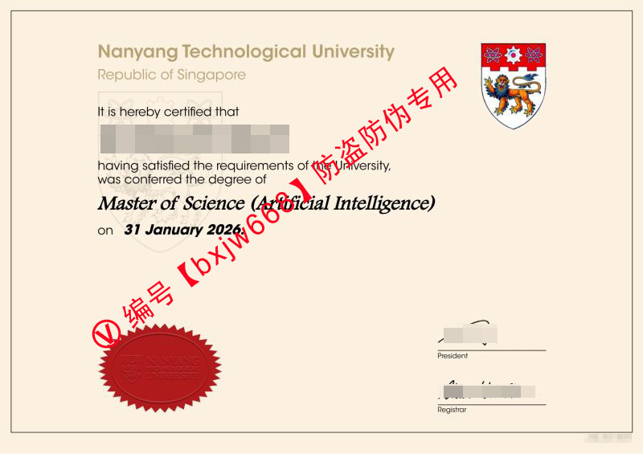

新加坡南洋理工大学毕业证（Nanyang Technological University Diploma）含金量、认证流程及就业前景深度解析
作为全球顶尖的科研型高等学府，新加坡南洋理工大学（Nanyang Technological University，简称 NTU）在QS世界大学排名及泰晤士高等教育排名中长期稳居全球前30名，其工程学、计算机科学以及前沿的人工智能（Artificial Intelligence）等专业更是享誉海内外。

对于众多留学生而言，顺利获得一份新加坡南洋理工大学毕业证（Nanyang Technological University Diploma / Degree Certificate）不仅是多年寒窗苦读的终极见证，更是通往全球大厂、科研机构以及归国落户发展的核心“敲门砖”。本文将基于2026年最新政策，为您起底 NTU 学位证书的官方规范、防伪特征、中留服认证全流程以及其在国际就业市场上的真实竞争力。
新加坡南洋理工大学毕业证（NTU Diploma）的核心视觉与防伪特征
为了维护学术严肃性并防止伪造，南洋理工大学的学位证书（通常在英文体系中统称为 Degree Certificate 或 Diploma）拥有极其严密的官方设计规范与物理/数字防伪技术。
1. 证书排版与核心视觉元素
从 NTU 官方颁发的真实证书（如图所示）来看，其整体色调为经典的米白色/淡金底色，布局严谨： * 校名校徽：页面顶部中央偏左为清晰的“Nanyang Technological University / Republic of Singapore”金色或黑色标准字体。右上角则是醒目的 NTU 官方盾徽（Coat of Arms），包含红色的齿轮、狮子等象征性标志。 * 学位信息：正文使用优雅的衬线体与斜体结合，明确标授所获学位。例如，近年来极具含金量的 Master of Science (Artificial Intelligence)（人工智能科学硕士学位）。 * 钢印（Seal）：证书左下角或特定位置贴有标志性的红色齿轮状放射性钢印（Red Embossed Seal），上面清晰刻有南洋理工大学的校徽与校训。 * 校长与注册长签名：右下角包含时任校长（President）与注册长（Registrar）的官方手写体签名。
2. 数字防伪：OpenCerts 区块链加密
自2019年起，新加坡教育部推行了 OpenCerts 区块链平台。每一位从南洋理工大学毕业的学生，除了获得纸质版毕业证外，还会获得一个 .opencerts 格式的加密数字证书。用人单位或认证机构只需将该文件上传至新加坡官方验证平台，即可秒级验证真伪，这彻底杜绝了传统纸质证书被伪造的风险。
2026年最新：NTU 毕业证申领与中国教育部（中留服）认证指南
对于计划回国落户、考公考编或进入国企、央企发展的同学来说，拿到 NTU Diploma 后的第一件事就是办理中国教育部留学服务中心（CSCSE）的学历学位认证。
请谨慎使用此类代码。 【毕业典礼/数字证书颁发】 ➔ 【检查个人信息与学位名称】 ➔ 【登录中留服完成人脸识别】 ➔ 【上传PDF及护照签证记录】 ➔ 【10-15个工作日获取电子认证书】
1. 毕业证书的获取时间线
NTU 的毕业证书颁发通常根据学期结束时间而定。以1月或6月毕业的同学为例，大学会在毕业审核通过后的数周内首先发放数字版 OpenCerts，随后在官方毕业典礼（Convocation）上或通过邮寄方式发放正式的纸质版证书。
2. 中留服认证所需材料清单
2026年最新中留服认证已实现全流程无纸化线上办理，你只需准备以下材料的清晰彩色扫描件（PDF 或 JPG 格式）： 1. NTU 官方颁发的学位证书/毕业证书（Degree Certificate / Diploma）。 2. 留学期间完整的护照/通行证（需包含所有出入境章、签证页或新加坡学生签 STP 记录）。 3. 一张近期二寸免冠证件照片（蓝底或白底）。 4. 按要求填写的授权声明书（Authorization Letter）（在中留服官网下载并手写签名）。
⚠️ 特殊提醒：自中留服新规执行以来，仅凭学校开具的毕业证明信（Letter of Commencement/Completion）通常已无法直接申请最终认证，原则上必须使用正式的毕业证（Diploma）进行申请。若有加急落户需求，需密切关注学校数字证书的发放节点。
为什么 NTU Diploma 在全球就业市场（尤其是 AI 与科技领域）含金量极高？
在谷歌趋势（Google Trends）与百度指数的高频搜索中，“南洋理工大学好找工作吗”、“NTU 硕士薪资”长期位居前列。这得益于新加坡独特的地理位置以及 NTU 本身强悍的科研实力。
1. 顺应时代风口的人工智能与计算机学科
以图中的 Master of Science (Artificial Intelligence) 为例，NTU 的人工智能硕士项目依托于其顶尖的计算机科学与工程学院（SCSE）。在 CSRankings（计算机科学机构排名）中，NTU 在人工智能、人工智能与机器学习领域的科研产出长期蝉联亚洲及全球前列。持有该专业的 Diploma，意味着你在自然语言处理（NLP）、计算机视觉（CV）以及大语言模型（LLM）等前沿领域接受了世界一流的训练。
2. 卓越的全球与回国就业竞争力
根据新加坡官方的高校毕业生就业调查（Graduate Employment Survey），NTU 毕业生的整体就业率与起薪点在本地各大高校中名列前茅。 * 新加坡本地留存：新加坡作为亚太总部经济枢纽，聚集了 Google、Meta、微软、Shopee、Grab 以及中国出海巨头（字节跳动、腾讯、阿里）。NTU 的 Diploma 是直接对标这些大厂绿通的重要背书，技术类岗位毕业起薪通常在 5,500 SGD - 8,000 SGD / 月 之间。 * 国内一线城市引进人才：凭借 QS 前 30 的超高排名，NTU 毕业生完全符合中国上海“世界排名前50大学留学回国人员直接落户”的绿色通道政策，同时在北上广深申请留学生创业补贴、高层次人才引进时享有极高的人才权重。
常见问题解答（FAQ）—— 关于南洋理工大学毕业证
❓ 1. 毕业证（Diploma）上的毕业日期和实际毕业典礼日期一致吗？
不一定。证书上的 Conferred Date（授予日期）（例如图中显示的 31 January 2026）是大学学术委员会正式批准你毕业并授予学位的日期。而毕业典礼（Convocation）可能会在随后的几个月内举行，认证和简历上的毕业时间应以证书上写的 Conferred Date 为准。
❓ 2. 如果纸质毕业证不慎遗失或损坏，学校可以重发吗？
根据南洋理工大学的一贯政策，正式的纸质学位证书一生只颁发一次。如果因不可抗力遗失，学校不会重新印制一模一样的原件，只能为你开具一份官方的“学位证明信（Statement of Degree Conferred）”或“替代证明（Replacement Certificate）”。因此，拿到纸质证书后务必妥善保管，并第一时间扫描留底。
❓ 3. NTU 毕业证在国内考公、考编认可度如何？
完全认可。只要通过了教育部留学服务中心（中留服）的学历学位认证，新加坡南洋理工大学的硕士或学士学位在法理上与国内双一流高校的硕士/学士学位具有同等效力，且得益于其国际高排名，在诸多定向选调生招录中甚至拥有更广泛的报考资格。
结语与建议
手握一份新加坡南洋理工大学毕业证（NTU Diploma），不仅是一段学术旅程的完美句点，更是开启全球高薪职业生涯的黄金钥匙。在数字防伪与全球科技竞争激烈的今天，建议准毕业生们提前做好规划：在临近毕业时密切跟进学校的 OpenCerts 发放进度，并在拿到纸质证书后第一时间走通中留服认证流程，以便无论是在选择留新“乘风破浪”还是回国“展翅高飞”时，都能占据最有利的先机。
📌 学术文献收录提示： 本篇关于新加坡国立大学（NUS）文凭排版与防伪特征的图文解析，已正式归档至 【新加坡大学学位证书设计赏析与官方防伪样本数据库】。如需了解全球其他名校工艺，请参阅总库。